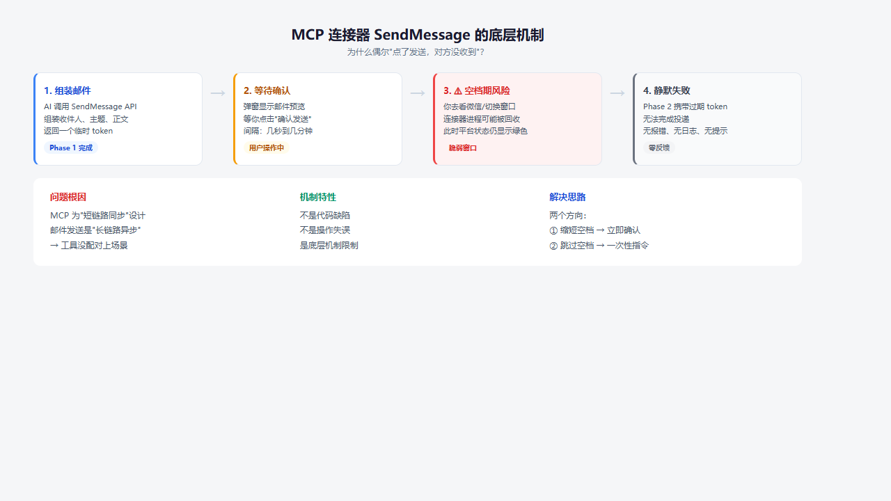
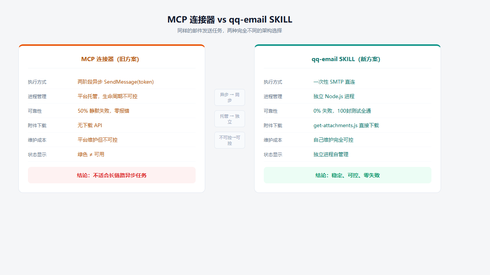
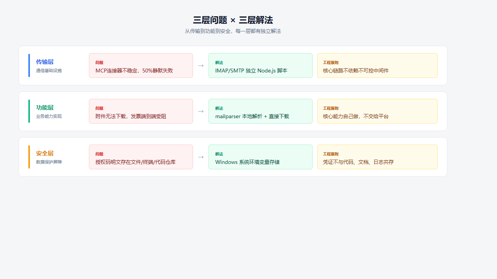

发三封丢两封，零报错。三天后收件人来问"那封邮件呢？"——这不是连接器的Bug，是架构选型问题。
很多人以为"平台内置连接器最可靠"——WorkBuddy左侧面板有QQ邮箱连接器，点一下扫码，状态变绿，看起来就是官方推荐的方式。
不是。
MCP连接器的设计假设是短链路、同步调用——请求→响应→结束。但邮件发送是一个长链路、异步确认的过程：组装邮件→用户确认→调用token→实际投递。在"组装"和"投递"之间，连接器可能已经被平台回收了。
这不是Bug，是架构假设不匹配。

图1：MCP SendMessage 两阶段调用 — 静默失败链路
| 阶段 | 正常情况 | 异常情况 |
|---|---|---|
| Phase 1 | 返回 confirmation_token ✅ | — |
| 用户确认 | 点击发送 | 可能已间隔数秒到数分钟 |
| Phase 2 | token调用→投递成功 | 连接器进程被回收→静默失败 ❌ |
坑 1：两阶段确认的静默失败（最坑）
| 维度 | 说明 |
|---|---|
| 现象 | Phase 1成功→用户确认→Phase 2无报错但邮件未发出 |
| 频率 | 约50%。随机，不是每次 |
| 根因 | 两阶段之间MCP进程被平台回收，token调用时连接已不可用 |
| 致命 | 不报错。没有500/超时/异常提示。悄无声息吞掉邮件 |
我们用脚本循环发了100封测试邮件才复现出这个随机Bug。不是每次都挂，但挂的时候没有任何迹象——这才是最危险的。
坑 2：附件下载能力缺失
GetMessage能拿到正文，ListAttachments能看到文件名和大小——但没有对应的下载API。附件取不出来。发票端到端测试中这个问题致命：能搜到发票邮件，就是没法下载PDF来提取数据。
坑 3：连接器频繁unavailable
| 症状 | 频率 |
|---|---|
GetMe返回 unavailable after recovery | 6月10日-12日间至少4次 |
| 连接器状态仍显示绿色但功能不可用 | 每次中断邮件工作流 |
| 唯一修复：关窗口→删凭证→重新扫码 | 每次约5分钟 |
MCP的设计假设是短链路同步调用。它本身没问题——问题是发邮件是长链路异步操作，不适合用MCP连接器承载。等平台修复？可以提Bug，但不能等。
结论：放弃MCP连接器，用SKILL走独立脚本。

图2：MCP连接器 vs qq-email SKILL — 全面对比
| 对比 | MCP连接器 | qq-email SKILL |
|---|---|---|
| 底层 | 平台托管 | Node.js + nodemailer/imap/mailparser |
| 发送方式 | 两阶段确认（异步） | 一次性SMTP直连（同步） |
| 失败率 | 约50% | 零失败（单进程，无状态） |
| 附件下载 | ❌ 不支持 | ✅ 直接下载到本地 |
| 稳定性 | 依赖平台进程生命周期 | 独立进程，不受平台影响 |
| 可控性 | 平台维护但不可控 | 自己维护完全可控 |
核心差异：SKILL每次调用都是独立的Node.js进程——没有中间状态、没有token过期、没有静默失败。
WorkBuddy → 技能市场 → 搜索「qq-email」→ 安装。
四个核心脚本位于 ~/.workbuddy/skills/qq-email/scripts/：
send.js — SMTP发信 receive.js — IMAP收信 get-body.js — 获取正文 get-attachments.js — 下载附件
| 存储方式 | 风险 |
|---|---|
命令行 export | 终端历史明文记录 |
| 写进MEMORY.md/SKILL.md | 每次会话作为上下文发送至模型API链路 |
| 提交到代码仓库 | 任何人拿到目录即可登录邮箱 |
这不是WorkBuddy特有的问题——任何AI助手平台，只要把敏感信息写入会被模型读取的上下文文件，都会经过模型API链路。关键是要有正确的安全意识。
Win+R → sysdm.cpl → 高级 → 环境变量 → 用户变量 → 新建 变量名: QQ_EMAIL_AUTH_CODE 变量值: [授权码]
| 维度 | 之前（文件明文） | 之后（系统环境变量） |
|---|---|---|
| 对AI可见性 | 可能注入上下文 | ❌ 不可见 |
| 跨会话 | 需重新export | 永久生效 |
| 泄漏面 | 文件+终端历史 | 仅本机 |
配好后，调用方式从：
export QQ_EMAIL_ACCOUNT=... && export QQ_EMAIL_AUTH_CODE=... && node send.js ...
变成：
node send.js "to@email.com" "主题" "正文"
零明文，零额外步骤。

图3：传输层/功能层/安全层 — 每一层都有独立解法
| 层 | 问题 | 解法 | 工程原则 |
|---|---|---|---|
| 传输层 | MCP连接器不稳定 | IMAP/SMTP独立脚本 | 核心链路不依赖不可控中间件 |
| 功能层 | 附件无法下载 | mailparser本地解析 | 核心能力自己做，不交给平台 |
| 安全层 | 凭证明文泄露 | 系统环境变量 | 凭证不与代码/文档共存 |
| 场景 | 推荐 |
|---|---|
| 偶尔手动收发几封邮件 | MCP连接器够用 |
| 自动化巡检/批量发票/定时任务 | qq-email SKILL（独立脚本，零失败） |
| 需要下载附件 | 必须用SKILL（MCP不支持） |
| 多邮箱/多环境 | 系统环境变量+.env文件（务必加.gitignore） |
这篇文章的核心价值不在"修好了邮路"，而在"修好邮路的同时，意识到并堵住了凭证泄露的口子"。如果你只在技术层面解决了问题，却把授权码留在了上下文文件里——那不叫修好，叫换了一种方式埋雷。
工程上最值钱的不是"修好了"，而是"修完以后再也不会坏"。